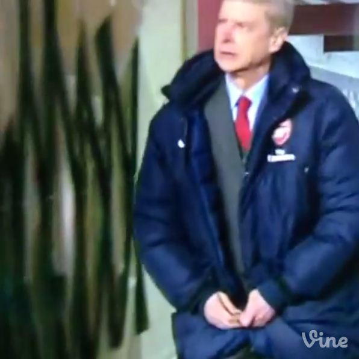

Let’s all distract ourselves from an impending defeat against Manchester City and think of the developments in the last few weeks.
Some of you might have heard of Russia’s invasion of the Ukrainian region of Crimea. Well, ask Arsene Wenger his opinion of the invasion and chances are that he will talk about a Russian-cum-Italian invasion of the league he had a love-affair with, not that St. Joan of Arc would approve of. Or her. Or both.
Back to the invasion thing, if you haven’t guessed yet, I am talking about the Roman invasion of the EPL. Wenger would also have a mouthful about the oil-fueled rise of Man City. Then again, petrol exhausts in the next 40 years, so Wenger will be relieved as per this short-term threat. I, like all Arsenal fans, hark on about how we don’t have a sugar daddy. But wait, isn’t Alisher Usmanov richer than Roman Abramovich?
Then again, we have Stan the man, who has more shares in the club than the ambitious Usmanov, and yes, the reason we can’t win anything, well that’s what some say. If there is opposition to Stan, think about Arsene. While nobody is planning to fly a jet across the Ashburton Grove (for dummies, it is also known as the Emirates) with a banner so convincing that Arsene tears that contract apart, we certainly know something is wrong with Arsenal and the question is: Is Arsene to blame?
I would say, all the problems started when Arsene started using that damn coat. He has forgotten that the tiki-taka style won’t work in the Premiership, his players aren’t upto the mark. While Giroud is busy curling the ball for an Arsenal supporter to dodge himself from the ball, this is what he’s doing.
That coat is our problem!
I agree that the Arsenal board is our problem. And maybe Whitcomb L Judson. Without the latter, Arsene wouldn’t have had the problem of zipping his coat. Because zips wouldn’t have existed. Now that zips are an inevitable part of our life, only if the Board could divert a fraction of the 30-plus million we will get from Puma to fund Arsene’s next coat. Hopefully, with a proper zip.
Some people don’t feel right at blaming a non-living object for not being able to fetch some other piece of silver, also non-living. We haven’t received a piece of silver from Barclays or England’s Football Association or even Michel Platini for quite some time. Or a bottle of champagne, not that Tony Adams would be allowed to have a sip. Some feel the person wearing the coat is the one responsible for not getting as many pieces of silver as, a you know, a guy who has a ‘fear to fail’. Apparently, even after recieving three pieces from the Premier League, four pieces from the Football Association, and 8 successive trophies (self-conferred, of course) for qualifying for a competition they can’t win, that is not enough to avoid the tag of ‘Specialist in Failure’.
Successors to Wenger?
Some people say, Arsene is still at Arsenal despite being past his sell-by date. I don’t think living people come with a price tag saying: “Expires in 2014″. Meanwhile where is that price-tag of the coat? Surely that has an expiry date, doesn’t it? Anyway, let’s talk about the potential successors to the reign which was marked from a team which could knock you unconscious (read Patrick Vieira) to a team so light-weight that even an earthquake of magnitude 0.0001 could knock them unconscious.
The first nominee is a person who used to perform Houdini acts at the Latics to usurping Arsenal for Champions League. Wait, even Wenger is a Houdini who used to perform acts like taking a team from 17th position to 4th. Both their tricks are stale and redundant. One used to just keep his team away from the black hole that is relegation, the other, well to win that Top 4 trophy.
Another nominee is doing magic of a different kind. He has a connection with the former, both having managed and brought Swansea to the Premier League. Both are now working for opposite sides of Merseyside. Brendan Rodgers and Roberto Martinez might have added that excitement to their teams, but both combined have won as many trophies as Wenger can in the next few weeks. If Roberto Martinez could win an FA Cup, we could do so. After all, we are favourites. Then again that’s what I said in 2011 in the Carling Cup.
The ghosts of this particular final was exorcised just this week against Swansea. Apparently Mertesacker wanted to show Steve Bould and Tony Adams they could also play attacking football like them (remember Steve putting through Tony on goal on the final day of the League season against Everton in 1998?) and played an excellent one-two with Szczesny to put Flamini through on goal which he duly dispatched in style.
The same one-twos the same ginger-haired midfielder who sprayed 60-yard passes for Sir Alex Ferguson despised. The only twist: they were in their own half. So their attempts to seal the game for Arsenal, gave Swansea the equaliser. Back to the next manager thing, I think the English wouldn’t mind this German ruling the Premier League. With the same fury as a certain dictator who wanted to dominate Europe (ask the referee who had to bear his brunt)
Hair dryer treatment maybe??
Ray Parlour can only remember Arsene tearing into him once in his 8-year stay at Arsenal. At least Arsene didn’t need to do so at his peak. This year alone, he had three opportunities to tear into Mesut Ozil and Co. but elected to do only once-at Anfield.
We can safely asssume Klopp can give that ‘hair dryer treatment’ Ferguson was known for. But, one of his biggest weaknesses is also shared by Wenger. Their anti-squad rotation trait. People following Borrusia Dortmund know that, among all changes in the world, only three things are constant – taxes, death and Robert Lewandowski as the striker in BVB’s 4-2-3-1 formation. Maybe add Nuri Sahin. At Real Madrid, he was complaining about lack of opportunities. At BVB, he is also complaining about lack of opportunities too. In the first case, he’s complaining about not playing. Now, he wants an opportunity to rest.
Anyway, with Wenger or without Wenger, the show must go on. I have not yet decided my stance on Wenger, but then again, my stance is irrelevant. That is up to those up there in the Board. Are they ‘board’ about Wenger’s ‘boring, boring Arsenal’ or do they want a change? Lastly, I hope you don’t carry too much optimism carrying into tonight’s game against Manchester City. This maybe a game we lose and even keep on losing, until the oil in the Middle East is exhausted. I maybe a tad too pessimistic following the end of our title hopes, but then again, we all are as frustrated as the players and the manager.